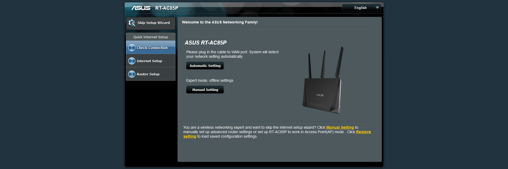
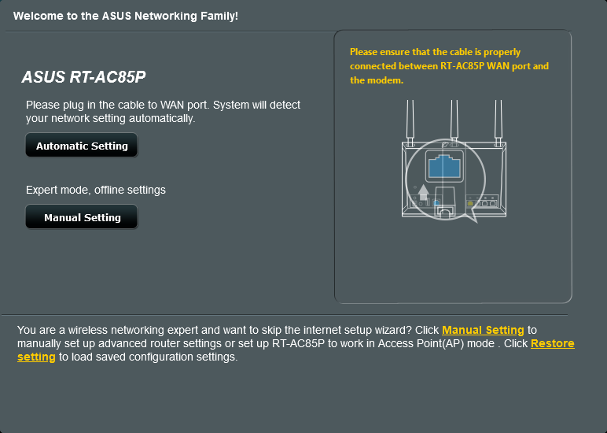
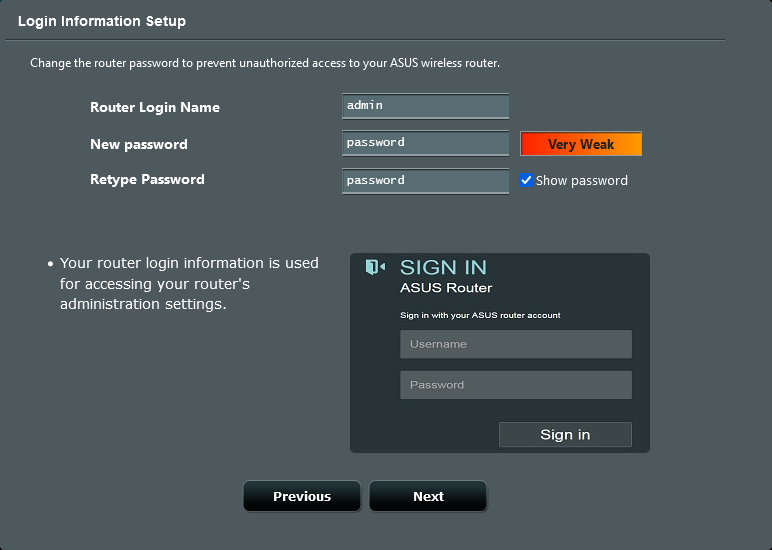
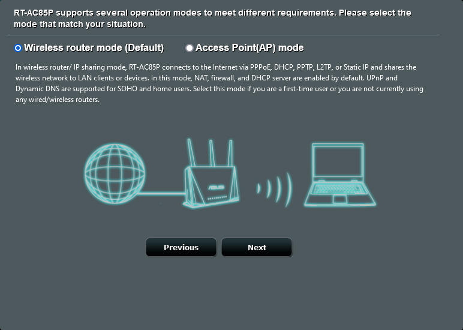
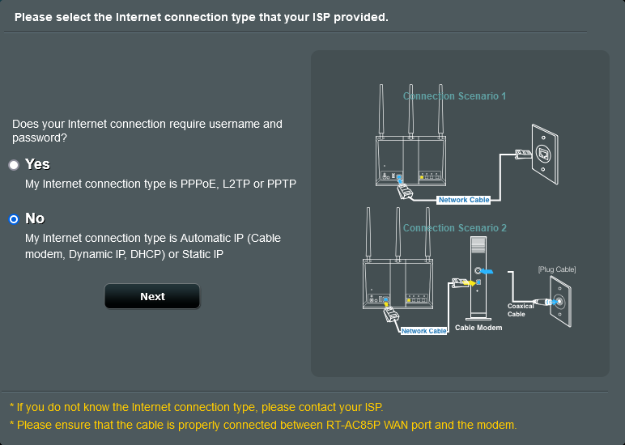
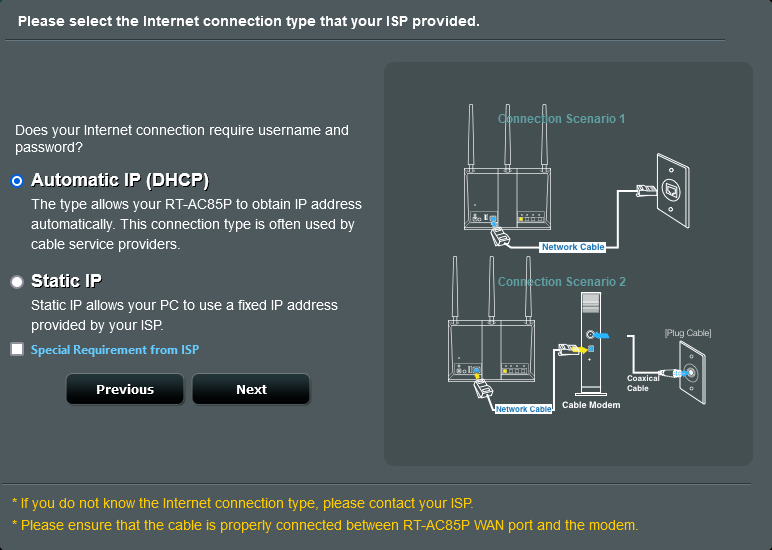
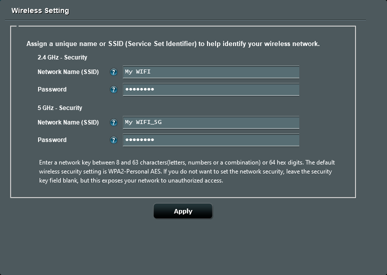
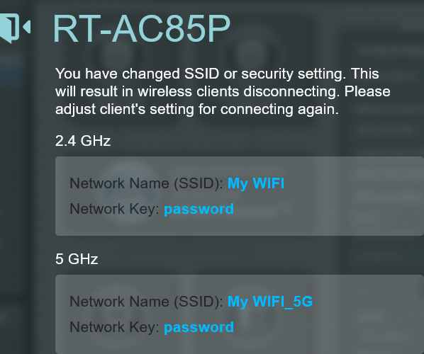
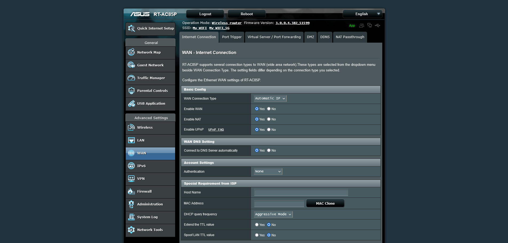

Router Configuration
- Intro
- Reset router
- Router access
- Setup SSID
Here will be demonstrated how to configure a wireless router.
Specifications
| Motherboard | ROG STRIX B450-F GAMING |
| Operating system | Windows 10 |
| Wireless router | ASUS RT-AC85P |
Look at the back of your wireless router and find the default access address.
Enter this URL or IP-address into your browser.
Open a web browser.
You will be redirected to the ASUS Setup Wizard.
If not, navigate to http://router.asus.com
You will be redirected to the ASUS Setup Wizard.
If not, navigate to http://router.asus.com
You will be taken to the router setup wizard









